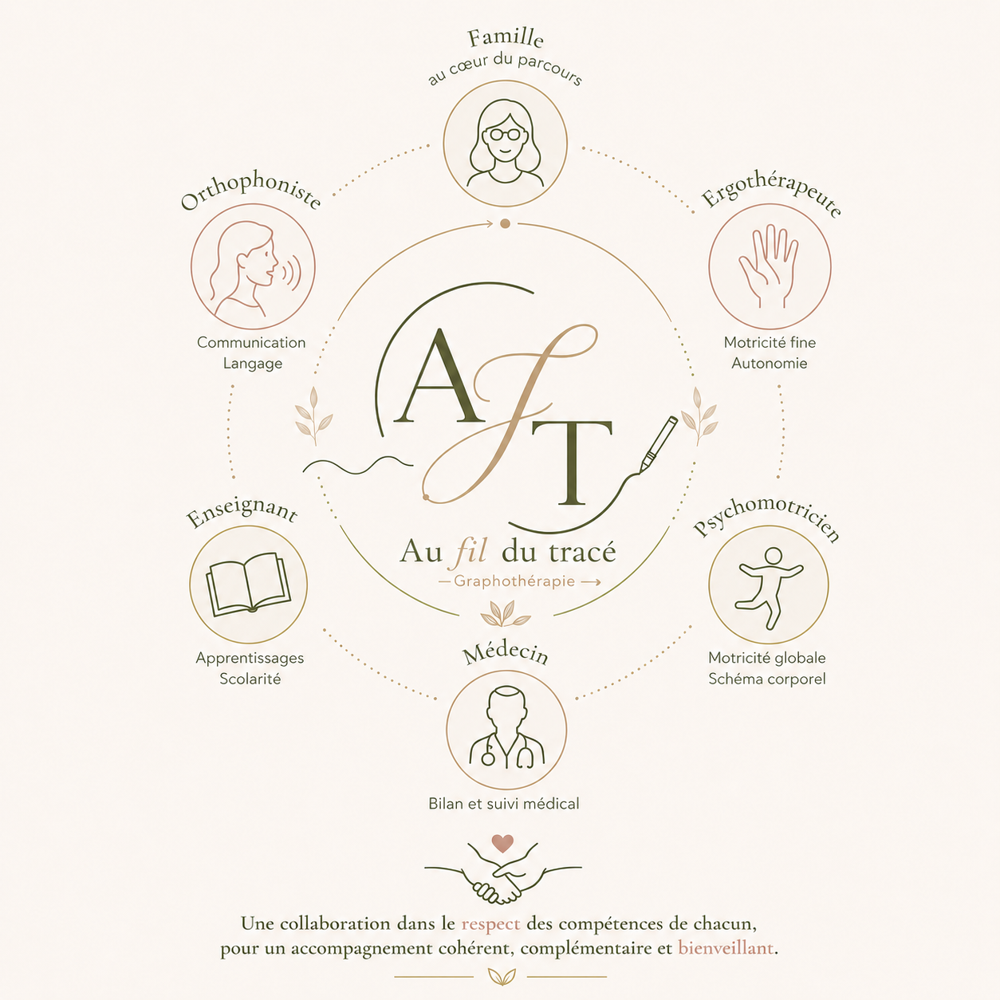

Béatrice Gouts Bourjac, graphothérapeute
Un parcours à la croisée de trois expériences : l'accompagnement, la connaissance du développement psychologique de l'adolescent et l'expérience de terrain auprès de personnes en situation de handicap.
J'accompagne les personnes dans les étapes importantes de leur parcours de vie. De l'accompagnement vers l'emploi à la graphothérapie, un même fil conducteur guide ma pratique : proposer un accompagnement bienveillant, personnalisé et respectueux de la singularité de chacun.
J'accompagne des personnes et leurs parcours professionnels depuis 20 ans. Pendant plus de 7 ans, j'ai accompagné des personnes en situation de handicap dans la construction de leur projet professionnel. Cette expérience m'a permis de développer une compréhension approfondie des difficultés d'apprentissage, des enjeux liés à la confiance en soi et de l'importance d'adapter chaque accompagnement aux besoins de la personne.
J'ai voulu aller plus loin. Je me suis formée à la graphothérapie. J'ai obtenu la certification du CNPG (Centre National de Graphologie et de Psychographie). Cette spécialisation est venue naturellement enrichir mon parcours. Parce que l'écriture mobilise à la fois les capacités motrices, les apprentissages, les émotions et la confiance en soi, la graphothérapie propose un accompagnement qui considère la personne dans toute sa singularité.
Aujourd'hui, j'accompagne des enfants, des adolescents et des adultes qui rencontrent des difficultés avec leur écriture. Mon objectif : aider chacun à retrouver un geste plus fluide et plus confortable. Écrire ne devrait pas être une source de tension ou de découragement. Écrire, c'est s'exprimer, apprendre, et prendre confiance en soi.
Mon ambition est simple : permettre à chacun de retrouver le plaisir d'écrire, de gagner en confiance et de révéler pleinement son potentiel, dans un accompagnement où la personne est toujours au cœur de la démarche.
Mes formations certifiantes qui répondent à tous les profils
Troubles Dys
Dyslexie, dyspraxie, dysorthographie, dyscalculie, dysphasie. Des troubles qui touchent la lecture, le geste, l’orthographe, le calcul ou le langage.
TSA & TDAH
Troubles du spectre de l’autisme, trouble de l’attention avec ou sans hyperactivité.
Handicaps moteurs & polyhandicap
Déficiences intellectuelles, troubles psychiques, situations de polyhandicap — c’est-à-dire l’association de plusieurs handicaps.
Psychologie de l’adolescent
Formation certifiante, pour mieux accompagner cette période charnière.

Un travail en réseau, jamais isolé
J'inscris ma pratique dans une collaboration avec les professionnels qui entourent la personne accompagnée — famille, orthophoniste, ergothérapeute, psychomotricien, enseignant, médecin — dans le respect des compétences de chacun.
Posez-moi une question →